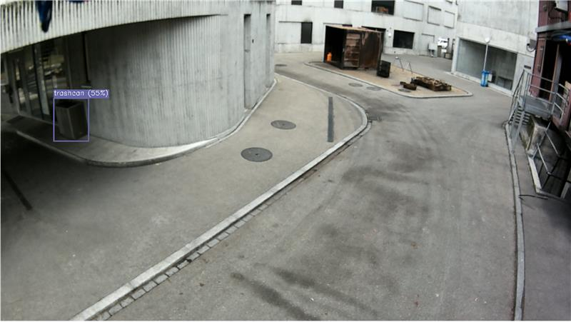
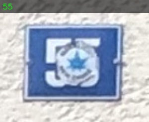
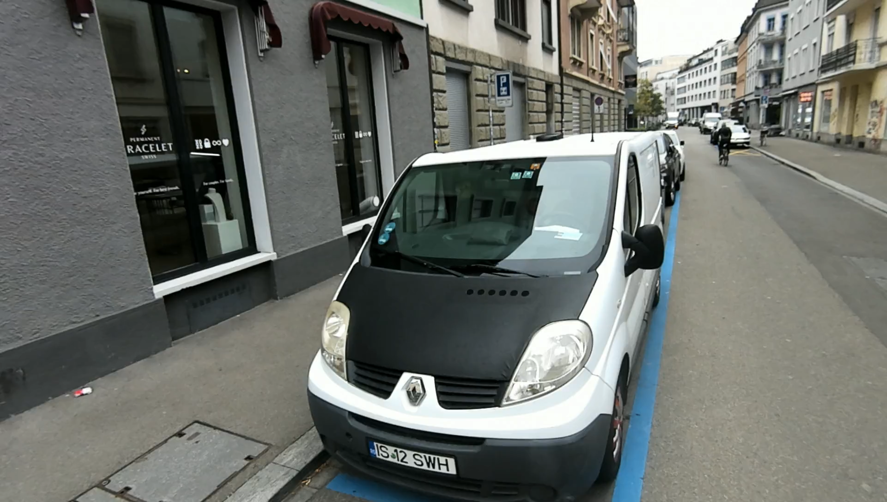
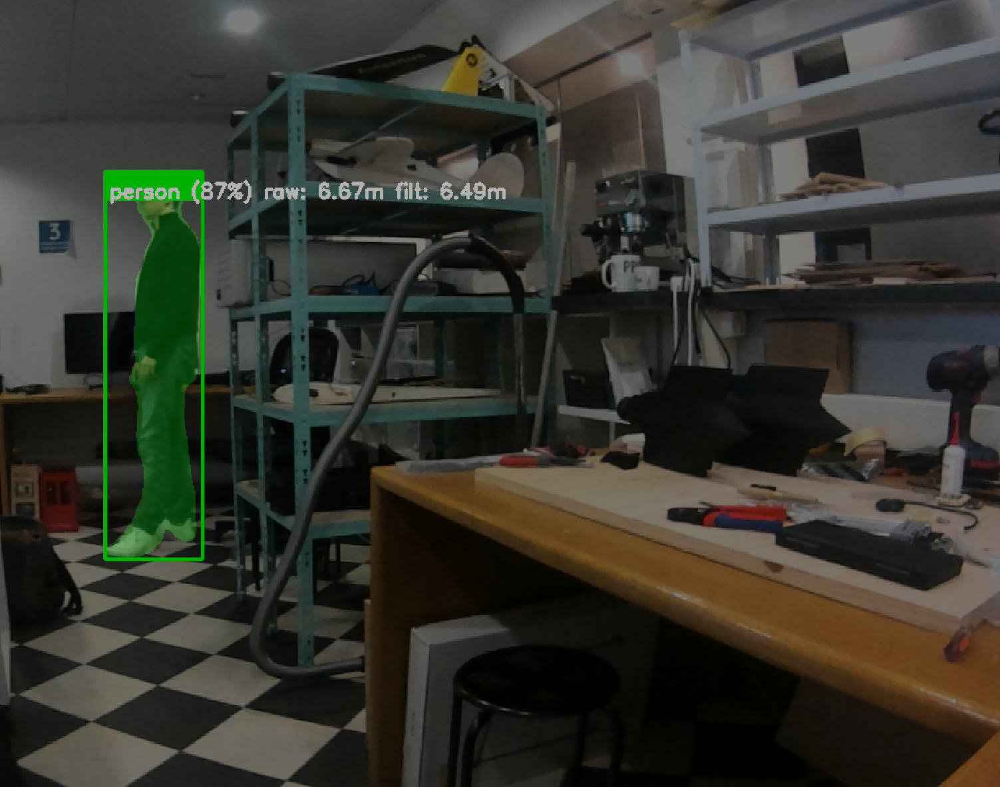
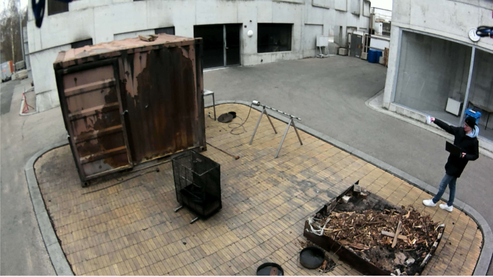

Experience · Avientus
Autonomous Drone Perception Stack
SPRIND Fully Autonomous Flight Challenge 2.0 · Jetson AGX Orin · YOLO · Qwen3-VL · GroundingDINO
During my internship at Avientus, I worked in a three-person team on an autonomous drone system for the SPRIND Fully Autonomous Flight Challenge 2.0. I led the perception work while the rest of the team covered planning and navigation. The goal was to make detection, tracking, and semantic prompt-driven target search reliable enough for autonomous operation on a real drone under edge-compute constraints.
The challenge had two tasks. In the last-mile delivery task, the drone had to find the correct house number, identify the relevant nearby object, and verify the result robustly. In the search-and-rescue task, it had to find and track a person matching a given description. Both tasks had to run onboard and feed useful outputs into the autonomy stack.
For last-mile delivery, I built a multi-stage perception pipeline. A fine-tuned YOLO model detected house numbers, Qwen3-VL 8B read the number to confirm the target address, GroundingDINO performed open-vocabulary detection of nearby target objects, and a final VLM verification step filtered false positives from the real-time detector. The point was to combine fast detection with semantic verification instead of relying on a single model.



For search and rescue, YOLO-seg detected and segmented people, and the vision-language model checked whether a detected person matched the requested attributes. Because the drone used a stereo camera setup, the segmentation output also gave a useful basis for estimating depth and position, making detections directly useful for planning.


The hardest part was making the full perception system run reliably on an NVIDIA Jetson AGX Orin while integrating with the real drone stack. That included model deployment, timing, networking, ROS 2 integration, and ensuring that data arrived without drops. The team advanced from stage 1 to stage 2 and received a EUR 325k award.